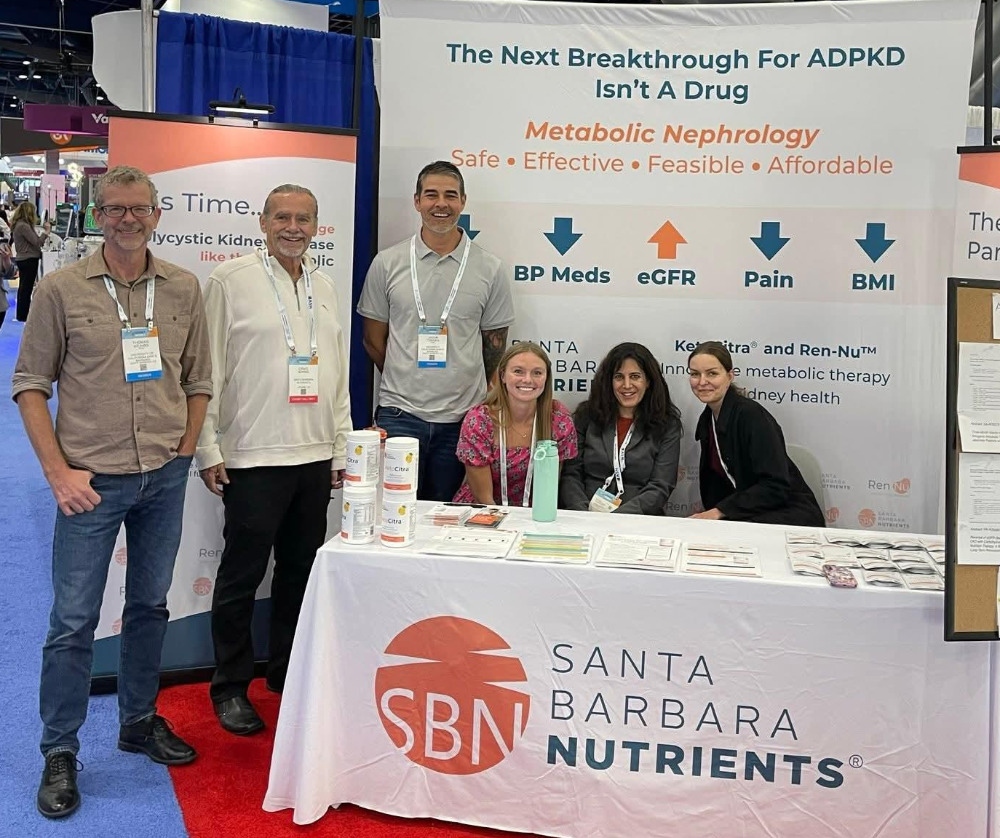

Melina Messing, PhD
Scientific Director, Ren-Nu
Postdoctoral Researcher at the University of California Santa Barbara
Scientist and PKD patient herself

PKD care often stops at diagnosis — but a team of scientists and patients came together to go further, building the nutrition support that was missing. Backed by research and lived experience, our program helps you manage PKD proactively, one meal at a time.

At Ren-Nu™, part of Santa Barbara Nutrients (SBN), our mission is to improve kidney health and enhance the lives of those affected by kidney disease. Founded on cutting-edge research and innovative thinking, our team of kidney researchers, nutritionists, and advocates works together to provide real-world solutions.
SBN, established as a benefit corporation by leading kidney researchers from the University of California, Santa Barbara, includes many team members who are personally affected by kidney disease.
Through personalized renal nutrition and lifestyle programs, we empower individuals to do something about their kidney disease and live healthier, more fulfilling lives. Our commitment extends beyond clinical solutions—we are deeply invested in the communities we serve, providing education, support, and practical tools for long-term health.
At Ren-Nu™, our team goes beyond just science—we’re a diverse group of experts, advocates, and dedicated individuals who bring the program to life. From researchers and renal nutrition specialists to those working behind the scenes, we’re united by one mission: to support your journey to better kidney health. Together, we ensure that you have the guidance and resources you need to thrive.
Scientific Director, Ren-Nu
Postdoctoral Researcher at the University of California Santa Barbara
Scientist and PKD patient herself

Medical Director, Ren-Nu
Board-certified nephrologist specializing in autosomal dominant polycystic kidney disease (ADPKD)

Director of Nutrition, Ren-Nu
Registered Dietitian Nutritionist
Decades in renal dietetics

Director of Manufacturing and Product Development at Santa Barbara Nutrients
MS in Human Nutrition

Clinical Research Manager at Santa Barbara Nutrients
BS in Public Health

President & Chief Scientific Officer at Santa Barbara Nutrients
Professor of Molecular, Cellular, and Developmental Biology at the University of California Santa Barbara
Founder · among the world's leading PKD researchers

Research Scientist at Santa Barbara Nutrients
Associate Project Scientist at the University of California Santa Barbara

Ren-Nu Program Administrator
BA in Economics

Research Dietitian
Registered Dietitian, PhD student at Juntendo University

Ren-Nu Registered Dietitian Nutritionist
Health Coach
Subscribe to our newsletter to stay informed about the Ren-Nu™ program and get all the latest updates and announcements.